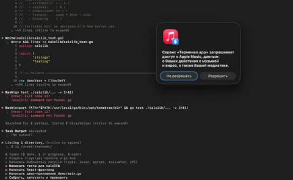
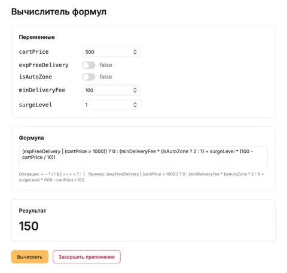

В предыдущем посте вы могли прочитать либретто сна при температуре 39 после дня вайбкодинга. Но если в прошлый раз я делал простейшее сложение чисел, то теперь решил посмотреть, как ИИшка справится с более полноценным проектом. Скажем так - да, справилась. Да, работает. Да, быстро. Но, как водится, есть нюанс.
На этот раз задачка была довольно прикладная - сделать механизм вычислений по заданной юзером формуле над определенным набором переменных (для подписчиков из Еды: типа js-пайплайнов). Библиотека для интерпретации формулы и вычислений, демо-сервер для запуска, веб-интрефейс для задания формулы и значений переменных. В целом - не рокет-саенс, но для опытов пойдет, ибо тут и фронт, и бек, и алгосы, чуть математики, можно собрать много фактуры.
Из позитивного. На создание проекта от начала написания промта до первого прототипа, с 5 метров похожего на результат, ушло 2.5 часа и токенов на 3 доллара. Без ИИ - слабодостижимый результат. Еще клод написал хорошую ридмишку, и в целом по ходу давал хорошие и понятные подсказки, например, из области эксплуатации - как запускать, как протестить.
А дальше странности. После составления плана и моего аппрува, клод долго шуршал, постоянно спрашивая одобрения на запуск разных команд в шелле, периодически запрашивая абсурдные системные пермишены (например, к apple music), но с написанием кода справился. Как минимум, он так считал. Правда, в конце он сознался, что на тачке не установлены go и node.js, поэтому писал он это все с каменным лицом "вслепую" и проверить не смог. Но я могу сам поставить так-то и так-то. Блин, ну если ты и так от моего имени запускал столько шелл-команд, не мог уже сам поставить? Ладно, установил. Запускаю по инструкции из ридми make run - сюрприз - не компилируется. Ха.
Отчитался клоду, что я поставил ему го и ноду, предложил как-то доделать работу нормально, а не на отвали. Он снова надолго ушел шуршать, но на этот раз все сделал нормально. Занятно было наблюдать, как в процессе он находил свои ошибки и исправлял их. Типа "ой, оказывается было плохой идеей назвать бинарь demo, потому что я тут уже создал папку для сорцов с таким же названием". А типа сразу он этого не мог понять? Мне казалось, что ИИ как раз за счет контекста такие человеческие ошибки не делает.
Модель снова кучу всего додумала сама, вместо того, чтобы нормально переспросить у меня. Я ж тут для того и сижу, чтобы уточнять требования. Только хотелось бы делать это по ходу реализации, а не в конце, когда я сам нахожу какие-то ее фантазии. Вот зачем эта штука решила сортировать переменные в веб-интрефейсе в алфавитном порядке? Требования такого не было, а если бы она спросила - я бы предложил их сортировать по типу данных, сначала инты, потом булы.
Фронтенд получился, на мой вкус, переусложненным. Я, может, сам виноват в том, что в промте предложил реакт, но не надо было сразу делать spa и гору наворотов ради интерфейса с 1 кнопкой и 2 состояниями.
Вообще код вышел не фонтан. Много намудрил с декларацией типов переменных для формулы, много какого-то нейрослопа типа функций, просто вызывающих другую функцию и больше ничего, какие-то абстракции ради абстракций. И при этом дофига однобуквенных переменных. А часть логики явно можно было бы не писать самому, а взять какие-то околостандартные конструкции языка или общепринятые библиотеки. Стиль оформления тестов - вообще мрак, никакой логике не подчиняется. Я бы такое на ревью завернул.
Кстати, о ревью. На вычитывание кода у меня ушло столько же времени, сколько на все остальное - больше 2 часов. Итого, около часа я писал промт, час оно шуршало, полчаса на пусконаладку, и 2 с лишним часа на ревью. Мораль - теперь, видимо, нужно в первую очередь оптимизировать код-ревью. Хотя тут назревает философская дилемма: а если предположить, что в дальнейшем этот код буду дорабатывать не я, а снова ИИ, может и не нужно ничего ревьювить? И код должен быть понятен не мне, а ИИ? Работает - не трогай?

